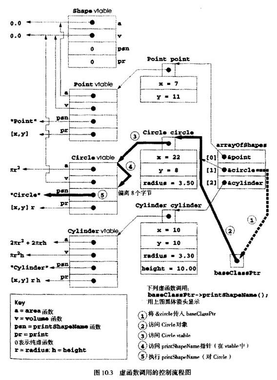

C++中的多态比较容易编程。虽然还可以像C语言等非面向对象语言中一样进行多态编程，但这种做法既复杂，又危险，需要进行指针操作。本节介绍C++如何在内部实现多态、虚函数和动态关联，以便了解这些功能是如何实现的，更重要的是帮助读者了解多态的开销(除了内存占用和处理器时间)。这样就可以更清楚地确定何时使用多态，何时不用多态。第20章“标准模板库(STL)”中将会介绍STL组件不用多态和虚函数，从而避免运行开销，达到符合STL特定要求的最优性能。
首先，我们要介绍C++编译器在编译时建立怎样的数据结构来支持运行时的多态。然后我们介绍执行程序如何利用这些数据结构执行虚函数和实现与多态相关的动态关联。
C++编译有一个或几个虚函数的类时，对该类建立虚函数表(virtualfunctiontable，vtableL vtable让执行程序选择每次执行类的虚函数时正确的实现方法。图10．3演示了Shape、Point、Circle和Cylinder类的虚函数表。
Shape类的vtable中，第一个指针指向该类area函数的实现方法，即返回面积0.0的函数。第二个指针指向该类volume函数的实现方法，即返回体积0.0的函数。printShapeName和print函数都是纯虚函数，没有实现方法，因此函数指针都设置为0。类中的vtable有一个或几个0指针时，称为抽象类。类中的vtable没有0指针时，称为具体类(如Point、Circle和Cylinder)。
Point类继承Shape类的area和volume函数，因此编译器只是把Point类vtable表中的这两个指针设为Shape类中area和volume指针的副本。Point类将函数printShapeName重定义为打印”Point:”，使函数指针指向Point类的printShapeName函数。Point类还重定义print，使相应函数指针指向Point类打印[x，y]的函数。
Circle类vtable表中Circle的area函数指针指向Circle的area函数(返回πr2)。volume函数指针只是从Point类复制，是原先从Shape向Point复制的指针。printShapeName函数指针指向Circle版本打印”Circle:”的函数。print函数指针指向Circle类的打印[x，y]r的函数。
Cylinder类vtable表中Cylinder的area函数指针指向Cylinder的area函数，该函数计算Cylinder的表面积2πr2+2πrh。Cylinder的volume函数指针指向volume函数，返回πr2h。Cylinder的priintShapeName函数指针指向打印"Cylinder"的函数。Cyelinder的print函数指针指向Cylinder类打印[x，y]rh的函数。
多态是通过复杂的数据结构实现的，涉及三层指针。前面只介绍了其中一层，即vtable中的函数指针。这些指针在调用虚函数时指向实际执行的函数。
下面要考虑第二层指针。实例化带虚函数的类对象时，编译器在对象前面连接该类的vtable指
针(注意：这个指针通常放在对象前面，但也不一定非要这样实现)。
第三层指针是接受虚函数调用的对象句柄(这个句柄也可以是个引用)。
下面看看典型的虚函数调用如何执行。考虑函数virtualViaPointer中的下列调用：
baseClassPtr->printShapeName()
假设baseClassPtr包含arrayOfShapes[1]的指针，即对象circle的地址。则编译器编译这条语句时，它确定调用实际上是对基类指针进行，并且printShapeName是个虚函数。
然后编译器确定printShapeName是每个vtable表中的第三个项目。要找到这个项目，编译器发现需要跳过前两个项目。为此，编译器编译8个字节的偏移量或位移量(在目前流行的32位机器中，每个指针为4个字节)，将其编译到机器语言目标码中，用于执行虚函数调用。
然后编译器产生完成下列工作的代码(说明：下列编号对应图1O．3中圆圈内的数字)：
1．从arrayOfShapes中选择第i个项目(这里是对象circle的地址)并将其传递给virtualViaPointer，从而将baseClassPtr设置为指向circle。
2．复引用指针，取得circle对象，它以指向Circlevtable的指针开始。
3. 复引用circle的vtable指针，取得Circlevtable。
4．跳过8个字节位移，选择printShapeName函数指针。
5．复引用printShapeName函数指针，构成要执行的实际函数名，并用函数调用运算符()执行相应的printShapeName函数和打印字符串”Circle：”。
图10．3的数据结构看起来有点复杂，但这些调节大部分由编译器负责，程序员不必担心，C++中的多态编程并不复杂。
每个虚函数调用中发生的指针复引用操作和内存访问需要增加一些执行时间。vtable和vtable指针要占用一些内存。
现在，已经有了关于虚函数调用如何工作的足够细节，可以确定其是否适合具体的应用程序。
多态性(它是用虚函数和动态关联实现的)是高效的，程序更使用这种功能对系统性能的影响极小。
虚函数和动态关联使得多态性编程和switch逻辑编程形成了对照。C++优化编译器通常能生成至少和手写的基于switch逻辑的代码具有同样效率的代码。对大多数应用程序而言，多态的开销是可以接受的。但有时则不能接受多态的开销，例如性能要求很高的实时应用程序。